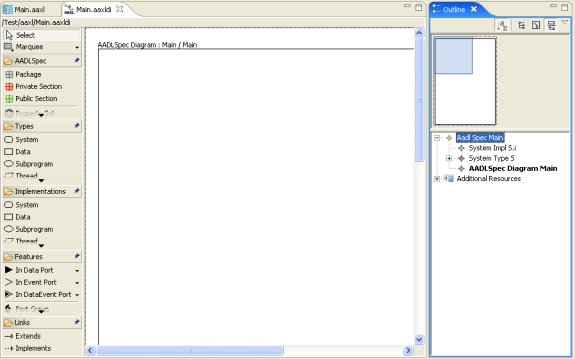
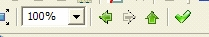

Previous
Next
Previous
Next
| 8.1 From AADL Text to a Graphical AADL Diagram |
A textual AADL model can be created with the AADL Text editor or imported into the
OSATE workspace by importing a text file through the File/Import command or by dragging
the text file into the OSATE workspace. Once a textual AADL file is in the workspace, an
AADL object model is compiled from it.
An AADL diagram can be created from an existing AADL object model by selecting the
model in the navigator, and choosing new “New > AADL Diagram” from the context menu.
This invokes the AADL Diagram wizard and populates it with values derived from the selected
model. A new AADL specification diagram is created when you click on “Finish”. The
diagram is initially empty, although the diagram’s outline view lists the existing model
components that can be placed in the diagram. The image below shows a new (empty)
diagram after it has been created from the existing model “Main.aaxl”. The outline at the
bottom right shows that the system implementation s.i and the system type s from the model are
available for use in the diagram.

Existing components are placed in the diagram by dragging them from the outline to the
diagram. You can drag multiple model objects from the outline view at the same time. If the
number is large, the current placement algorithm of Topcased may not be able to fit them.
Therefore, before populating a diagram you may want to change the size and orientation of the
diagram. You do so by right clicking and selecting Graphical Properties/Change Diagram
Properties. Landscape and A3 is a reasonable setting.
The top-level diagram (AadlSpec diagram) represents a library of component declarations.
Each component implementation has its own instance diagram. You create/open the instance
diagram by double clicking on the component implementation. Connections are automatically
filled in when subcomponents are placed in the instance diagram of an implementation.
Users can navigate between diagrams of the AADL model (aaxl file) through navigation
toolbox buttons

or by selecting and double clicking on the appropriate diagram in the outline view.
All diagrams belonging to an object model file (aaxl) are kept in a single diagrams file (aaxldi).